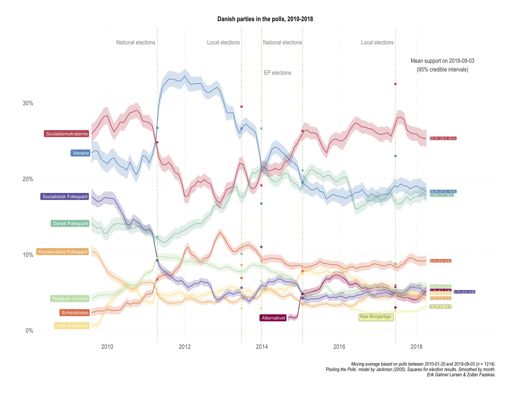
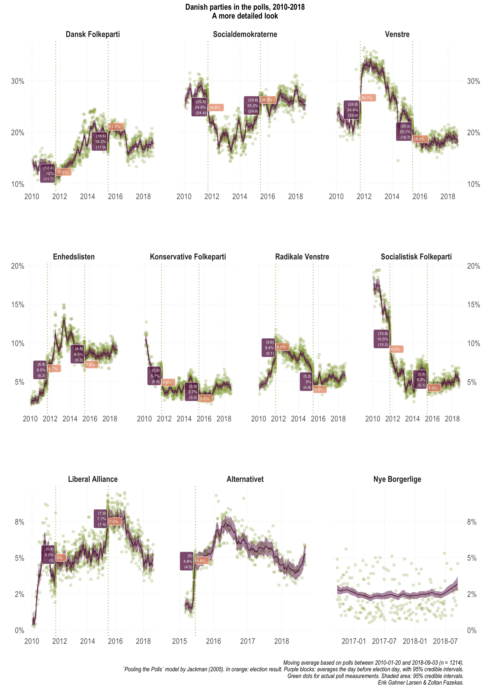
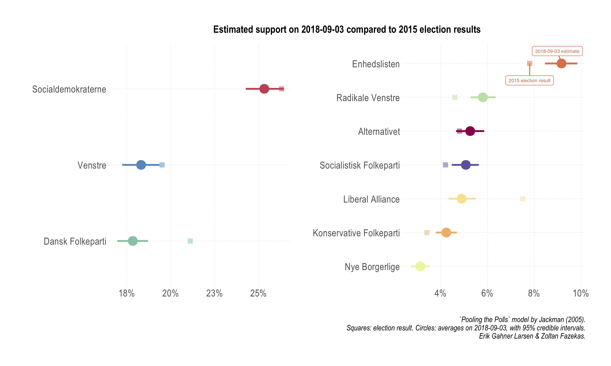
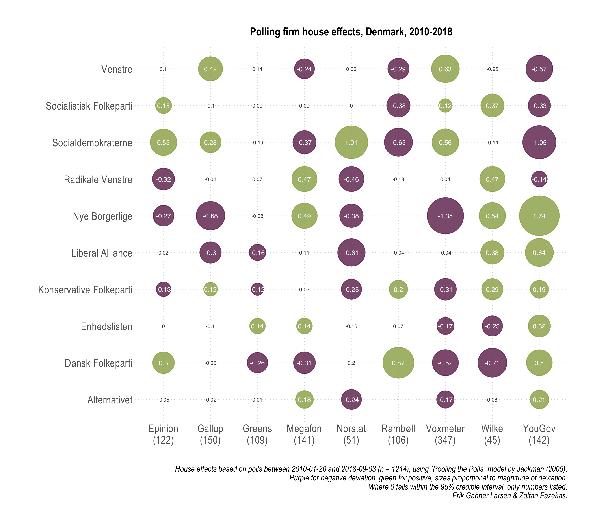
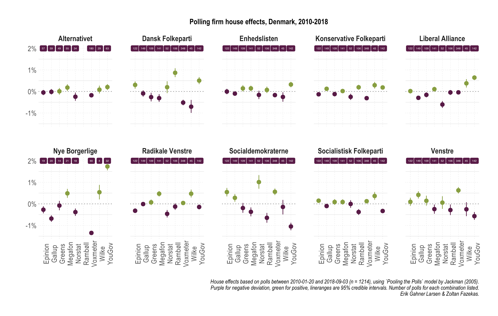
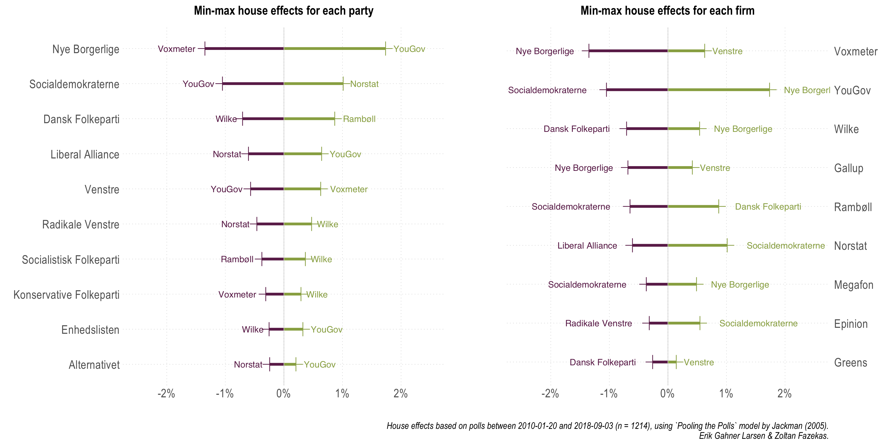
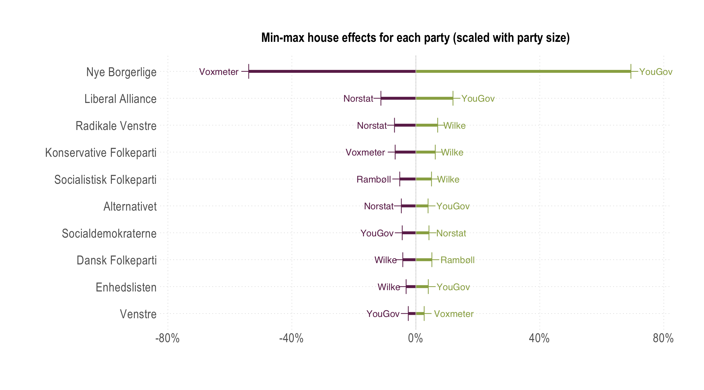

Pooling the polls: Denmark, 2010-2018
Written by Zoltán Fazekas and Erik Gahner LarsenUpdated: 17-Sep-2018
TV2.dk: Hav denne artikel ved hånden, hver gang du ser en meningsmåling frem mod valget
With the Danish general election coming up (to be held on or before the 17th of June 2019), it is important to know where the different parties stand in the polls and understand the challenges related to obtaining this information. To shed light on this, we present results based on a pooling the polls model. We use an up-to-date dataset centralizing polls in Denmark.
We rely on the model presented by Jackman (2005). He formulates good reasons behind and advantages of this model:
- "If two or more polls are in the field at more or less the same time, then we have the potential to combine the information in each poll, to arrive at an estimate that is more precise than any single poll" (page 503)
- "Polls are subject to bias, and, in particular, biases specific to particular polling organizations, known as 'house effects' (the term 'house' here refers to a polling company, not a sampled household). Variations in mode of interview (telephone, face-to-face, or Internet), sampling and weighting procedures, the day of the week or the time of day a company interviews, the age, ethnic and gender composition of a given company's interviewers, question wording and question ordering are all potential sources of bias in survey research" (page 503-504)
The first goal of this post is to offer a snapshot of party support evolution from 20th January 2010 to 3rd September 2018 (comprising of 1,214 polls). The second goal is to assess the magnitude of polling company related systematic biases. Specifically, the reported party support numbers might be subject to the sampling frame employed by the different polling companies. Overall, our data covers 10 parties and 9 polling companies. If you are unfamiliar with the Danish parties (which is normal), we list the ones analyzed in the table below.
| Abbreviation | Danish name | English name |
|---|---|---|
| SD | Socialdemokraterne | Social Democrats |
| V | Venstre | Liberal Party |
| DF | Dansk Folkeparti | Danish Peoples Party |
| RV | Radikale Venstre | Danish Social Liberal Party |
| En-O | Enhedslisten – De Rød-Grønne | Red-Green Alliance |
| KF | Konservative Folkeparti | Conservative People's Party |
| SF | Socialistisk Folkeparti | Socialist Peoples Party |
| LA | Liberal Alliance | Liberal Alliance |
| A | Alternativet | The Alternative |
| NB | Nye Borgerlige | The New Right |
It is important to emphasize that we do not engage here in any sort of prediction. We summarize the results in two main sections: the parties and the polling companies. We rely on visual display and briefly discuss some of the main insights. After a summary, we also have a short section on some methodological choices we made.
The parties
The overall results are displayed in the first plot of the section. Such an analysis seems to be useful when commentators would want to assert broader points about party support evolution. There is nothing spectacular or unexpected here, rather the resulting averages and trends trace well with otherwise invoked analysis. We have also added dashed lines for key political events in the period, i.e. the two national elections, the two local elections and the European Parliament election.
 [Open enlarged PDF]As there is always an interest in a win-lose narrative (horse race journalism), some examples are warranted based on this period: Enhedslisten and DF followed a strengthening and then stabilizing pattern. Conversely, SF and KF registered a decrease and then stabilizing around these lower support numbers. The figure also highlights that V has been registering systematically higher support compared to SD (and itself) during the SD led government period, especially up until the 2014 EP elections.
A closer look at the end of our period (last measurement: 3rd of September 2018) reveals three points:
- DF and V are indistinguishable in terms of support.
- Five smaller parties in the range of 3.8% to 6.3% are basically indistinguishable in terms of support, with very minor exceptions and small differences.
- The new right-wing party Nye Borgerlige is hovering around the 2% mark (the electoral threshold).
We might also want to compare at various time points how the estimates from the pooling model fare in comparison with actual electoral results. Looking at the figure above, it is rather clear that the pooled model is quite uninformative for EP and local election support. Which is great, since it offers some face validity of the measures: our estimates are based on questions referring to vote intention in the national elections.
This exercise however can generate quite misleading conclusions. The reason for it is simple: our model uses information from all polls, which means that the estimate of the average support for a party on 2011-09-14 (one day before the elections) will be quite aware of polling post-election. Even though we do not include the actual results as data points into our model, if polls "self-correct" after the election has taken place (which they do), the estimates will be quite close to the election results (the support for Danish People's Party in the wake of the 2015 election is a good example). The bias of such a comparison depends on the combination of how good the post-election poll adjustments were and how are the data split around elections. This also means that a world in which even poll based election result predictions (before the actual elections) were way off and close match between a full period pooling the polls model and election results is a happy, consistent world.
The figure below offers the party support plots for each party separately, without monthly smoothing and the actual polling numbers from each poll. In addition, it lists the results from the national elections and the model based average support on the day before the elections were held (with uncertainty, always -- we ain't no barbarians).
 [Open enlarged PDF]While there is slightly more clutter here, it is also more straight forward to make some of the comparisons we intended to make. If you had thought we will not emphasize again the biased nature of this comparison, you were wrong. The best way to think of these numbers and comparisons would be to retrospectively ask how well do we know party support on a particular day, using all data, that also happens to be an election day.
2011- Within uncertainty bounds: DF, SD, Enhedslisten, RV, LA
- Outside uncertainty (compared to bounds):
- Overestimated: SF (+1%) & KF (+0.6%)
- Underestimated: V (-0.3%)
- Within uncertainty bounds: LA, Alternativet
- Outside uncertainty (compared to bounds):
- Overestimated: V (+0.2%), Enhedslisten (+0.5%), KF (+0.1%), RV (+0.2%), SF (+0.9%)
- Underestimated: DF (-2.5%) & SD (-0.7%)
Overall, without judging how well or badly the model estimates and implicitly the polls match election results (they do pretty well though), the 2015 DF underestimation and the twice appearing SF overestimation by around 1% should be highlighted. Yet again, this in a context that we used all available polling information pre- and post-elections.
Finally, an often used benchmark in the discussion about how parties are doing is based on previous electoral results. We facilitate such a comparison with a dedicated plot below.
 [Open enlarged PDF]Four parties outperform their 2015 election shares: Enhedslisten, RV, SF, and KF. So, we see KF and SF looking slightly stronger in the polls compared to their election results, however, in the long run and compared to the start of the period analyzed, they clearly lost a lot of support. Three parties underperform: DF, LA, and V. As visible in the figure, for some of these parties, especially V, the differences are quite small and very close to the uncertainty bounds of the poll estimates. For the rest of the parties, when uncertainty is taken into account, we do not see any significant movement.
The polling companies
We now turn to the magnitude of specific biases associated with polling companies. It might be tempting to consider some of these as partisan biases, but that thought should be dismissed early on. There might or might not be such biases, we definitely cannot evaluate that. What we document here should mostly reflect biases related to data collection, sample quality and composition, method, and so on. These are inherently polling related possibilities for bias. In the first figure we offer a broader summary and we follow up in the next with a display containing more granularity and information.
 [Open enlarged PDF]  [Open enlarged PDF | Open alternative plot] The key takeaway points are:- While there is variation across party × company cells, generally, house effects are modest in Denmark.
- Greens and Gallup stand out with overall smallest and fewest house effects.
- Focusing on the three largest parties, house effects for V are moderate to small, whereas for SD and DF larger effects (-/+) are split between 2-3 polling companies.
- For Enhedslisten and Alternativet (and to some extent SF and RV), house effects are smallest and fewest, suggesting that systematic sample composition and method related differences between polling companies are least influential.
- New and small parties are hard to measure (Nye Borgerlige) and polling company differences are the largest.
In order to substantiate or rather highlight some of the takeaway points formulated above, in the figure below we display which polling companies had the largest house effects for each party, and alternatively, which parties registered the highest house effects within each polling company. Since house effects can be negative (systematically underestimating a party) or positive (systematically overestimating a party), both minimums and maximums are plotted below.
 [Open enlarged PDF]We note that Epinion, Gallup, and Megafon are the ones that register no maximum (or minimum) house effects, and that Nye Borgerlige and SD are the parties most often appearing with largest within company house effects. This last observation invites further discussion. Of course, one can argue that a house effect of 1% can mean very different things for a party hovering around the 2% electoral threshold compared to one generally polling above 20%. Thus, in the final figure, we simply divided the magnitude of the largest house effects with the estimated average party support for each party. This is nothing more than a scaling exercise.
 [Open enlarged PDF]Indeed, the largest house effects for Nye Borgerlige amount to more than half of their estimated size, since they are the smallest, but also newest actual party. There is quite a sharp contrast between this party and all other parties, not only the three larger parties. Somewhat unsurprisingly, this just reiterates that measuring smaller parties is harder, but also that samples traditionally employed by many polling companies result in substantial systematic differences in the estimated support for Nye Borgerlige. The reason we highlight potentially sampling and data collection related differences is also grounded in the comparison with Alternativet: while older, larger, and through one election, it is still the most comparable on such features to Nye Borgerlige, but not the expected voter base. However, the house effects patterns and magnitudes for Alternativet look different, much more similar to previously established, larger parties. This is nothing more than to say that interpretations and commentary focusing on Nye Borgerlige even with pooled averages should be done in a much more cautious way.
Summary
This section is the tl;dr version of this note.
- What did we do and why?
- Estimated a pooling the polls model for the January 2010 to September 2018 period using 1214 polls from 9 polling companies.
- Because combining information from multiple polls helps getting more precise estimates of party support (compared to single or separate polls) and allows to assess biases specific to particular polling organizations.
- What did we find for party support and house effects?
- Pooling the polls estimates track (retrospectively) well party support. At the most recent measurement, DF and V are indistinguishable in terms of support, so is a block of five smaller parties in the 3.8% to 6.3% range.
- Overall house effects are moderate in Denmark, companies such as Greens and Gallup doing best in this regard.
- New and rather small parties such as Nye Borgerlige are difficult to measure and there are large, systematic differences in how well polling companies can do it. Interpretation of NB support should be extra careful.
Methodological note on sample sizes
For the polls analyzed, beyond the party support numbers, the sample size of each poll features in the model as this information is needed for uncertainty calculations. While for most polls (95%) this information can be tracked down, some reports do not include any information on the sample sizes. As displayed by the table below, there is a systematic bias in sample size availability, where an overwhelming proportion of lacking sample size information stems from YouGov polls.| Company | Polls | % sample size NA |
|---|---|---|
| YouGov | 142 | 40.85 |
| Gallup | 150 | 3.33 |
| Rambøll | 106 | 0.94 |
| Megafon | 141 | 0.71 |
| Voxmeter | 348 | 0.00 |
| Epinion | 122 | 0.00 |
| Greens | 109 | 0.00 |
| Norstat | 51 | 0.00 |
| Wilke | 45 | 0.00 |
Furthermore, this is a feature of a particular period: the lacking sample sizes are for YouGov polls carried out between 2012 and 2015. While hopefully this can be rectified in the future, for the purposes of the current analysis, for each missing sample size we imputed the median sample size of each respective polling company. Alternatively, we also fitted our model where we imputed a sample size of 1000 uniformly for all missing values. The results do not differ in any substantive or substantial sense.
If we use the uniform 1000 we are on the conservative side (it is among the lowest sample sizes) and polling companies where sample size is not available are punished more heavily, if in reality they had larger sample sizes. This approach would simply mean that we incorporate uncertainty about the sample size to a larger manner. Using the median value when needed for each polling company is a `fairer' approach, when one company is responsible for most of the missing values, especially when evaluating the house effects. Thus, we report here results based on the second approach, mostly to underscore that some of the larger house effects for YouGov are not due to conservative sample size imputation.